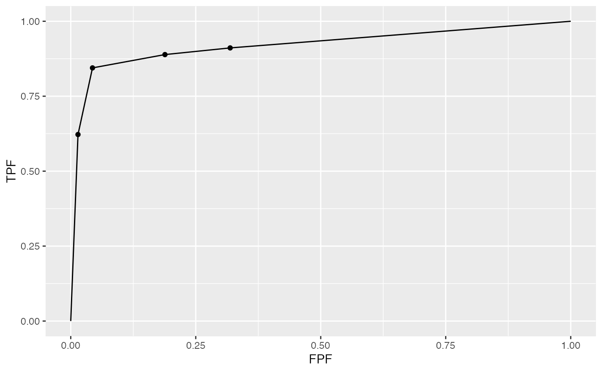

dataset02.RdThis is referred to in the book as the "VD" dataset. It consists of 114 cases, 45 of which are diseased, interpreted in two treatments ("0" = single spin echo MRI, "1" = cine-MRI) by five radiologists using the ROC paradigm. Each diseased cases had an aortic dissection; the ROC paradigm generates one rating per case. Often referred to in the ROC literature as the Van Dyke dataset, which, along with the Franken dataset, has been widely used to illustrate advances in ROC methodology. The example below displays the ROC plot for the first treatment and first reader.
dataset02
A list with 8 elements:
NL Ratings array [1:2, 1:5, 1:114, 1], of false positives, FPs
LL Ratings array [1:2, 1:5, 1:45, 1], of true positives, TPs
lesionNum array [1:45], number of lesions per diseased case, all set to 1
lesionID array [1:45, 1], labels of lesions on diseased cases, all set to 1
lesionWeight array [1:45, 1], weights (or clinical importance) of lesions, all set to 1
dataType "ROC", the data type
modalityID [1:2] "0" "1", treatment labels
readerID [1:5] "0" "1" "2" ..., reader labels
Van Dyke CW, et al. Cine MRI in the diagnosis of thoracic aortic dissection. 79th RSNA Meetings. 1993.
str(dataset02)#> List of 8 #> $ NL : num [1:2, 1:5, 1:114, 1] 1 3 2 3 2 2 1 2 3 2 ... #> $ LL : num [1:2, 1:5, 1:45, 1] 5 5 5 5 5 5 5 5 5 5 ... #> $ lesionNum : int [1:45] 1 1 1 1 1 1 1 1 1 1 ... #> $ lesionID : num [1:45, 1] 1 1 1 1 1 1 1 1 1 1 ... #> $ lesionWeight: num [1:45, 1] 1 1 1 1 1 1 1 1 1 1 ... #> $ dataType : chr "ROC" #> $ modalityID : Named chr [1:2] "0" "1" #> ..- attr(*, "names")= chr [1:2] "0" "1" #> $ readerID : Named chr [1:5] "0" "1" "2" "3" ... #> ..- attr(*, "names")= chr [1:5] "0" "1" "2" "3" ...